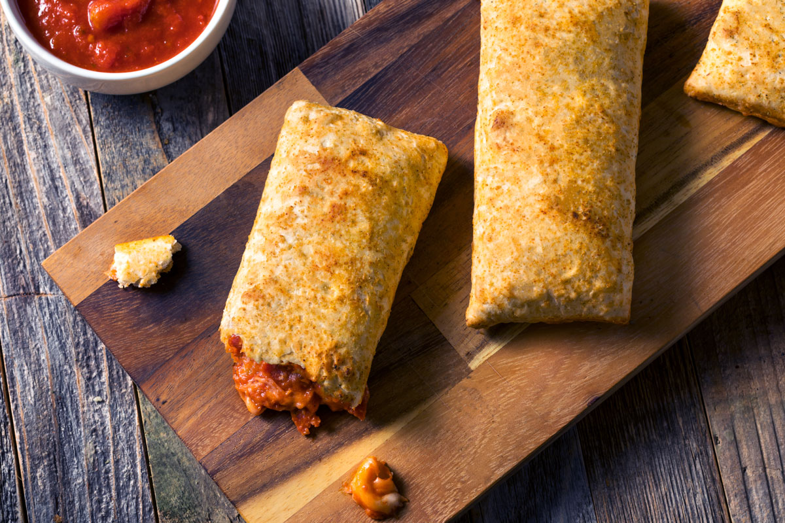

Hot Pocket

Description
A hot pocket is a microwavable calzone-like
item. It has a seasoned bready exterior
with a melty, cheesy, meaty interior.
Ingredients
Steps
- Open box of hot pockets
- Take out one hot pocket and open the wrapper
- Place the hot pocket in the crisping sleeve
- Place on a plate and put in the microwave for
2 minutes